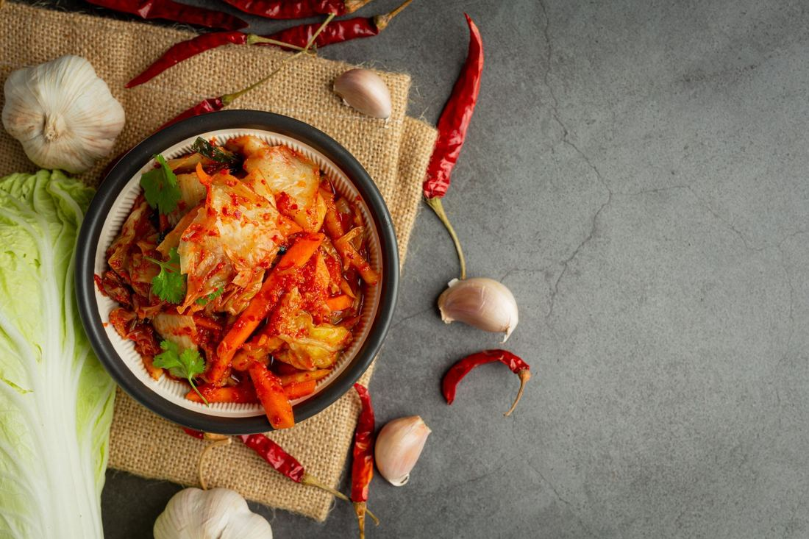
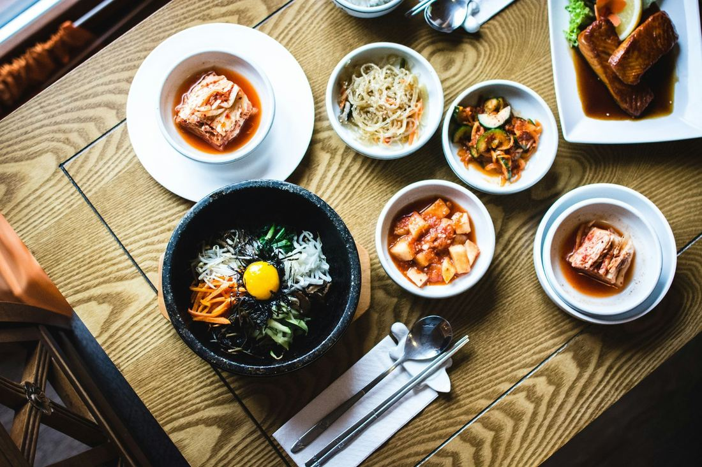

Discover the Health Benefits of Kimchi: A Nutritional Powerhouse
Discover the Health Benefits of Kimchi: A Nutritional Powerhouse

Kimchi, a staple in Korean cuisine , is a flavorful, fermented dish traditionally made with napa cabbage and radishes, seasoned with ingredients like garlic, ginger, and chili peppers. Its origins date back centuries, evolving from simple salted vegetables to the complex, probiotic-rich food it is today.
Incorporating fermented foods into your diet is crucial for maintaining a balanced nutritional intake. These foods are teeming with beneficial probiotics that support digestive health and enhance nutrient absorption. The process of fermentation not only preserves food but also boosts its health benefits by cultivating beneficial bacteria.
The health benefits of kimchi extend far beyond gut health. Regular consumption can boost immune function, aid in weight management, reduce cholesterol levels, and even offer anti-aging properties due to its high antioxidant content. Each jar of kimchi is a powerhouse of vitamins A, B, C, and essential minerals like calcium and iron.
Explore these benefits and more by visiting Miami Kimchi , where you can discover authentic kimchi crafted with passion and tradition.
What is Kimchi?
Kimchi is a traditional fermented dish that is an essential part of Korean cuisine. It is known for its distinctive blend of flavors and health benefits. However, kimchi is more than just a food item; it holds cultural significance and has been a staple in Korea's culinary history for centuries.
The Origins of Kimchi
Kimchi originated over 2,000 years ago during the Shilla Dynasty as a way to preserve vegetables during the cold winter months. This preservation method allowed people to enjoy fresh-tasting vegetables even when they were out of season.
Common Ingredients
The vibrant flavors of kimchi come from its main ingredients:
- Cabbage : Napa cabbage is usually used as the main ingredient.
- Radishes : Daikon radish adds crunchiness and depth to the dish.
- Garlic : Known for its strong aroma, garlic enhances the overall taste.
- Ginger : Adds warmth and spiciness to the kimchi.
- Chili Pepper : Provides heat and bright color.
These ingredients are carefully mixed together, and through fermentation, they transform into a tangy and spicy delight that is both delicious and nutritious.
Different Types of Kimchi
There are various types of kimchi that cater to different tastes:
- Baechu Kimchi : The most popular variety made with Napa cabbage.
- Kkakdugi : A version made with cubed radish for a crunchy texture.
- Nabak Kimchi : A watery style often enjoyed as a refreshing side dish.
Each type of kimchi reflects regional preferences and family traditions, showcasing the versatility and rich heritage of this beloved Korean delicacy.
Nutritional Value of Kimchi
Kimchi is a nutritional powerhouse, packed with vitamins and minerals while being low in calories. This makes it an ideal choice for those looking for nutrient-dense options without adding extra calories to their diet.
Key Nutrients in Kimchi
Calories
A typical serving of kimchi contains only about 10-20 calories, making it an excellent addition to any meal without significantly impacting your caloric intake.
Vitamins
- Vitamin A : Essential for vision, immune function, and skin health.
- Vitamin C : Known for its antioxidant properties and role in collagen synthesis and immune support.
- Vitamin K : Crucial for blood clotting and bone health.
Minerals
- Iron : Important for oxygen transport in the blood and energy production.
- Calcium : Vital for strong bones and teeth, as well as muscle function.
Comparison with Other Fermented Foods
Unlike some other fermented foods, such as yogurt or sauerkraut, kimchi provides a unique combination of spicy flavors along with its nutritional benefits. While yogurt is often praised for its calcium content, kimchi offers a broader range of vitamins due to its diverse ingredients like cabbage, radishes, and spices.
Low-Calorie and High Nutrient Density
The balance of low calories with high nutrient density makes kimchi an appealing choice for those focused on healthful eating patterns. Its rich composition supports overall wellness by supplying essential nutrients without overloading on calories, fitting seamlessly into various dietary preferences.
Health Benefits of Kimchi
New Paragraph

Kimchi is known for its health benefits, and it also has unique anti-aging properties that make it a valuable addition to any diet. The key to these benefits lies in the compounds that fight against oxidative stress, a process associated with aging and various diseases.
Research Findings
Studies have found that kimchi contains antioxidants that neutralize free radicals, protecting cells from damage and slowing down the aging process.
Connection to Longevity
Eating kimchi regularly promotes overall well-being and longevity. The probiotics in kimchi also contribute to maintaining gut health, which is increasingly recognized as crucial for healthy aging.
Adding kimchi to your diet not only enhances the taste of your meals but also greatly benefits your skin health and vitality. This fermented dish shows how traditional foods can provide modern health solutions, especially in promoting a youthful appearance and supporting long-term well-being.
How to Make Delicious Kimchi at Home: Try These Simple Recipes!
Baechu Kimchi Recipe (Napa Cabbage Kimchi)
Creating your own kimchi at home can be a rewarding experience, allowing you to enjoy the health benefits of kimchi while customizing the flavors to your preference. Here's a simple recipe for making Baechu Kimchi, a classic and popular type of Napa cabbage kimchi.
Ingredients Needed:
- 1 large Napa cabbage
- 1/4 cup sea salt
- 1 tablespoon sugar
- 2 tablespoons fish sauce
- 2 tablespoons Korean red chili pepper flakes (gochugaru)
- 2 cloves garlic, minced
- 1-inch piece of ginger, grated
- 4 green onions, chopped
- 1 medium carrot, julienned
- 1 small radish, julienned
Step-by-Step Instructions:
- Preparation of Cabbage: Cut the Napa cabbage lengthwise into quarters and remove the core. Chop into bite-sized pieces.
- Salting Process: Place chopped cabbage in a large bowl and sprinkle with sea salt. Massage the salt into the leaves until they start to soften. Add water to cover and let it sit for about 1–2 hours, turning occasionally.
- Rinse and Drain: Rinse the salted cabbage under cold water three times to remove excess salt. Drain well.
- Make the Paste: In a separate bowl, combine sugar, fish sauce, gochugaru, garlic, ginger, and mix well until it forms a paste.
- Combine Ingredients: Add drained cabbage to the paste along with green onions, carrot, and radish. Use your hands (wear gloves if possible) to thoroughly mix everything until the vegetables are evenly coated with the spice mixture.
- Pack in Jar: Pack the kimchi tightly into a clean glass jar or container, leaving some space at the top for expansion during fermentation. Seal loosely with a lid.
- Fermentation Process: Leave the jar at room temperature for about 1–5 days to ferment. Check daily by pressing down on it with a spoon to release gases and ensure it's submerged in its juices.
- Refrigeration: Once fermented to your liking, move it to the refrigerator where it will continue to slowly ferment over time.
This homemade Baechu Kimchi not only offers rich flavors but also allows you to enjoy its myriad health benefits as part of your diet.
Kkakdugi Recipe (Cubed Radish Kimchi)
Creating Kkakdugi , a distinct variety of kimchi, is straightforward and rewarding. This cubed radish kimchi offers a crisp texture and refreshing taste—a must-try for those exploring kimchi recipes .
Ingredients Needed:
- 2 pounds of Korean radish (or daikon)
- 2 tablespoons of sea salt
- 2 tablespoons of sugar
- 5 cloves garlic, minced
- 1-inch piece ginger, minced
- 4 tablespoons Korean red chili pepper flakes (gochugaru)
- 2 stalks green onions, chopped
- 1 tablespoon fish sauce
Step-by-Step Instructions:
- Prepare the Radish: Peel and cube the radish into bite-sized pieces.
- Season Radish: In a bowl, toss with salt and sugar. Let it sit for about an hour until it releases water.
- Mix Ingredients: Drain excess water from the radishes. Add garlic, ginger, gochugaru, green onions, and fish sauce.
- Combine Thoroughly: Mix until every piece is evenly coated with the spicy mixture.
- Pack in Jar: Transfer to an airtight jar, leaving some space on top for fermentation gases.
- Fermentation: Allow to ferment at room temperature for 1-2 days before refrigerating.
This recipe is a perfect introduction for beginners wanting to explore the health benefits of kimchi at home.
Storing Your Homemade or Store-Bought Kimchi: Tips for Optimal Fermentation!
Maintaining the vibrant flavor and health benefits of kimchi hinges on proper storage. Here are some kimchi storage tips to ensure optimal fermentation:
- Temperature Control : Store kimchi in the refrigerator at around 4°C (39°F). This temperature slows fermentation, preserving taste and texture.
- Airtight Containers : Use airtight glass jars to prevent exposure to air, which can lead to excessive fermentation or spoilage.
- Regular Checks : Monitor your kimchi every few weeks. If it tastes too sour, it's fermenting too fast; adjust by lowering storage temperature.
Proper storage not only ensures delicious flavors but also maximizes the probiotic health benefits of kimchi.
Considerations Before Enjoying the Health Benefits of Kimchi
While kimchi offers numerous health benefits, it's important to be mindful of certain considerations. One key factor is the sodium content, which can be quite high due to the use of salt in the fermentation process. Individuals with hypertension or those on a low-sodium diet should consume kimchi in moderation.
- Sodium Content: Kimchi can contain substantial amounts of sodium; checking labels for lower-sodium options might be beneficial.
- Dietary Restrictions: Those with specific dietary needs should consult with healthcare providers before incorporating kimchi into their diet regularly.
Awareness and moderation are essential for maximizing benefits while minimizing potential risks associated with kimchi consumption.
Incorporating More Fermented Foods into Your Diet
Adding fermented foods like kimchi to your diet offers a flavorful way to enhance your meals while reaping numerous health benefits. These foods are rich in probiotics, which support gut health and overall wellness. Here are some tips for including more fermented foods:
- Try Kimchi as a Side Dish: Enjoy kimchi alongside grilled meats, rice bowls, or scrambled eggs to add a spicy kick and beneficial nutrients.
- Incorporate Yogurt or Kefir: Opt for plain yogurt or kefir with live cultures for breakfast or snacks to promote digestive health.
- Sauerkraut on Sandwiches: Add sauerkraut to sandwiches or hot dogs for a tangy flavor boost and probiotic advantage.
- Explore Miso Soup: Miso paste is another fermented option that can be used in soups, marinades, or dressings to impart umami richness.
Kimchi stands out due to its versatility and the wide array of health benefits it provides. From promoting heart health to supporting weight management efforts, kimchi is a nutritional powerhouse that can be seamlessly integrated into various dishes. By diversifying your sources of fermented foods, you can enjoy their unique flavors and health benefits daily. Consider exploring Miami Kimchi for authentic options crafted with traditional Korean methods.
Frequently Asked Questions
-
What is kimchi and what are its common ingredients?
Kimchi is a traditional Korean dish made from fermented vegetables, primarily napa cabbage and radishes, along with ingredients like garlic, ginger, and chili pepper. It has a rich history in Korean cuisine and comes in various types, including Baechu (napa cabbage), Kkakdugi (cubed radish), and Nabak (water kimchi).
-
What are the nutritional benefits of kimchi?
Kimchi is low in calories yet high in nutrients, providing essential vitamins such as A, C, and K, as well as minerals like iron and calcium. Its nutrient density makes it a beneficial addition to a balanced diet compared to other fermented foods.
-
How does kimchi support gut health?
Kimchi contains probiotics that promote beneficial gut bacteria, aiding in digestion and alleviating gastrointestinal disorders. Regular consumption of kimchi can lead to improved gut health.
-
Can eating kimchi enhance immune function?
Yes, regular consumption of kimchi can enhance immune function due to its rich antioxidant content. These antioxidants help fight infections and support overall immune system health.
-
Is kimchi helpful for weight management?
Absolutely! Kimchi is low in calories and high in fiber, which aids in satiety. Incorporating kimchi into your diet can support weight loss efforts by helping you feel full longer.
-
What are some tips for storing homemade or store-bought kimchi?
To ensure optimal fermentation and freshness, store your homemade or store-bought kimchi in an airtight container in the refrigerator. Avoid exposing it to air frequently to maintain its flavor and probiotic benefits.
< Older Post
Newer Post >
Shop these ingredients at Kimchi Mart
Six stores across South Florida — or order online and pick up in an hour.